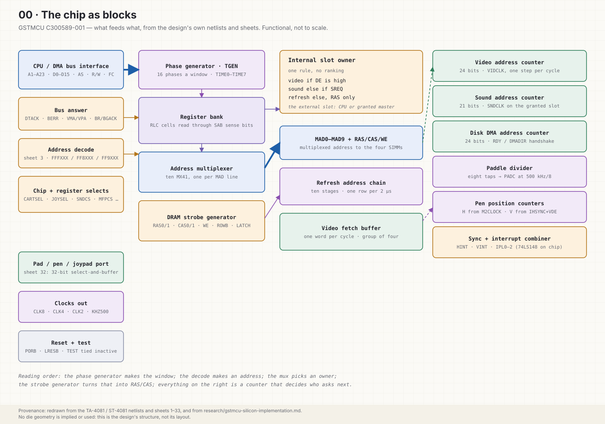
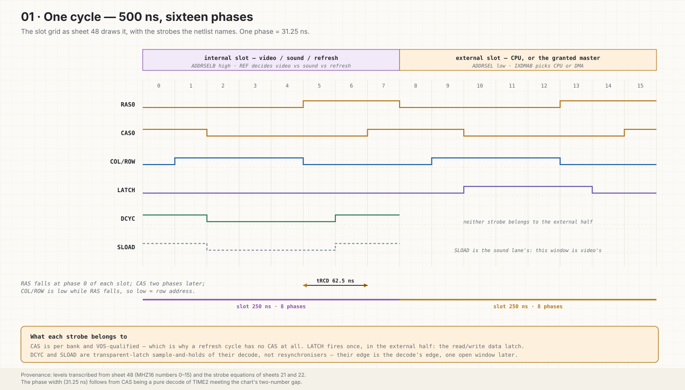
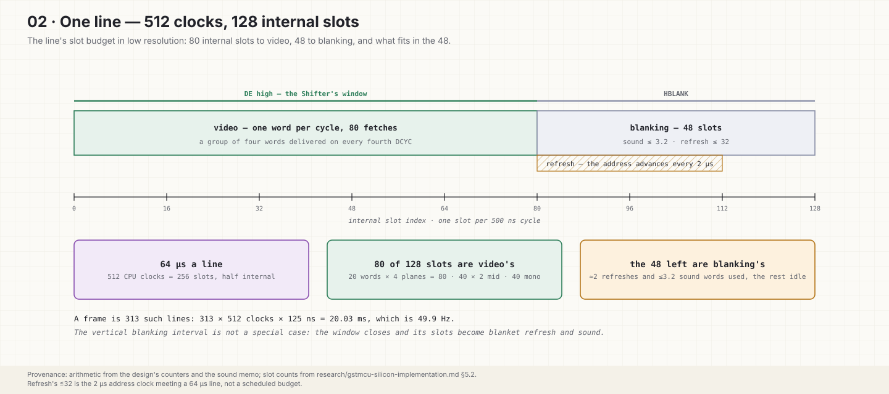
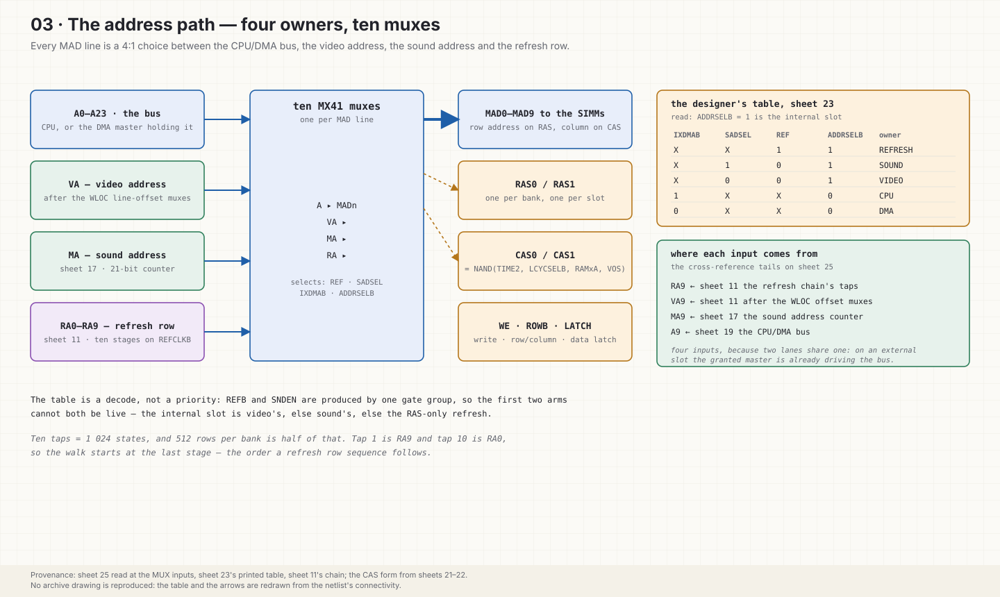

C300589-001, seen at four levels: the blocks, one cycle, one line, and the counters behind both.
Educational schematics, drawn from the design's own netlist and charts. Functional, not to scale, and
not a floorplan — this part has no die photograph, so no layout is claimed. Every sheet
carries its provenance; the study behind them is ../research/gstmcu-silicon-implementation.md.
00 · The chip as blocks
The parts and what feeds what. Start here.

01 · One cycle — 500 ns, sixteen phases
The slot grid with the strobes the netlist names: RAS, CAS, COL/ROW, LATCH, DCYC, SLOAD.

02 · One line — 512 clocks, 128 internal slots
How a line spends its slots: video's 80, blanking's 48, and what fits in the 48.

03 · The address path — four owners, ten muxes
Every MAD line is a 4:1 choice, and the printed table says which arm wins.

04 · Clocks and counters
One oscillator, one divider ladder, seven counting structures — each with its clock.